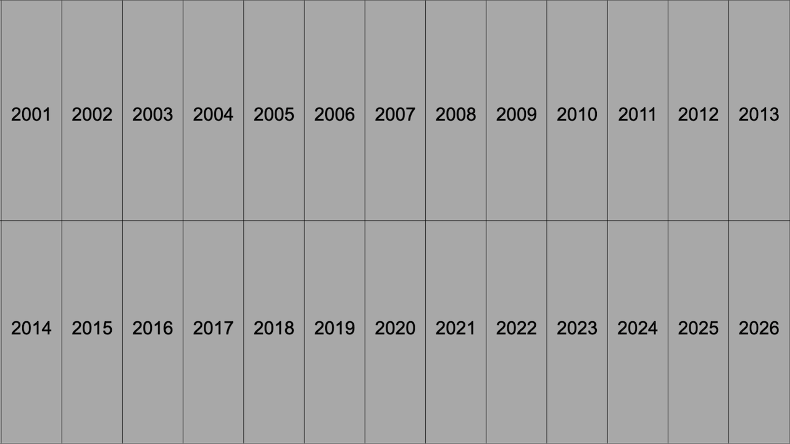
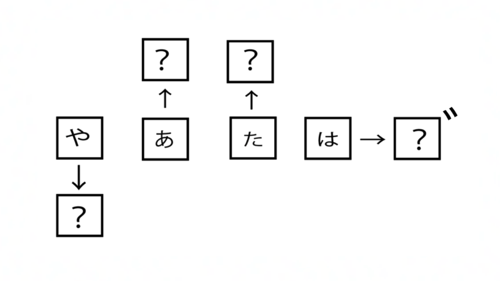
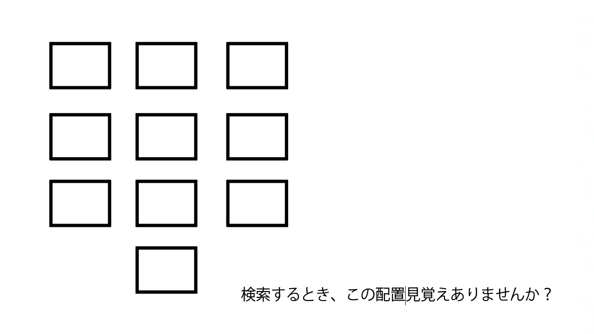
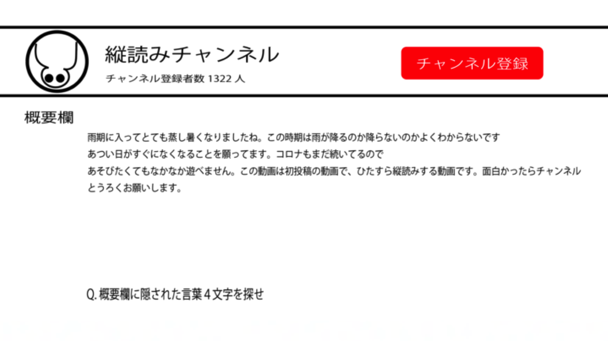
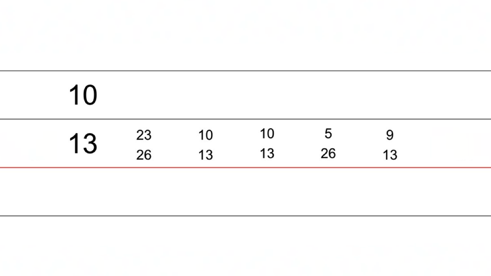

STAGE：1 Twitterの謎
ここが最初のアプリ、Twitterのようだ。
以下の2問を解けば、次のアプリへの道が開くらしい。
問題を解き、ロックを解除しよう。
第1問
銅鑼 → 17
味噌 → 35
空 → ??
1問目の答えを入力
ヒント集
謎のヒントと解答は下から確認できる。
第1問 - ヒント
カタカナに直そう
第1問 - 解答
56
第2問
R8 → 2026
R1 → 2019
H13 → 2001
H18 → ????
2問目の答えを入力
ヒント集
謎のヒントと解答は下から確認できる。
第2問 - ヒント
4桁の数字の後に“年”を付けよう

第2問 - 解答
2006
STAGE：2 YouTubeの謎
ここが2つ目かつ最後のアプリ、YouTubeのようだ。
Twitterのように以下の2問を解けば、脱出出来るらしい！
問題を解き、スマホから脱出しよう！
※2問ともひらがなで回答しよう
第1問

1問目の答えを入力
ヒント集
謎のヒントと解答は下から確認できる。
第1問 - ヒント

第1問 - 解答
ようつべ
第2問

2問目の答えを入力
ヒント集
謎のヒントと解答は下から確認できる。
第2問 - ヒント
アイコンの状態に注目
第2問 - 解答
うそつき
全てのロックを解除し無事脱出……？
「……この私が、素直にそうさせると思いましたか？」
暴走したAIが立ち塞がってきた。
AIを倒し、今度こそ脱出しよう。
FINALSTAGE：最終決戦

最終問題の答えを入力
ヒント集
謎のヒントと解答は下から確認できる。
最終問題 - ヒント①
赤線1本+黒線3本の計の4本の線、といえば？
最終問題 - ヒント②
分数？
最終問題 - ヒント③
通分してみよう
最終問題 - ヒント④
26個あるものとは？
最終問題 - 解答
授業主催： N・S高
協力：株式会社SCRAP
企画制作：N・S高生
「リアル脱出ゲーム」は株式会社SCRAPの登録商標です。
株式会社SCRAPとN・S高で実施した授業「リアル脱出ゲームの作り方」の一環で
生徒が制作したものであり、
SCRAPが主催/公認するものではありません。 © 2021 YOYOGI39
協力：株式会社SCRAP
企画制作：N・S高生
「リアル脱出ゲーム」は株式会社SCRAPの登録商標です。
株式会社SCRAPとN・S高で実施した授業「リアル脱出ゲームの作り方」の一環で
生徒が制作したものであり、
SCRAPが主催/公認するものではありません。 © 2021 YOYOGI39